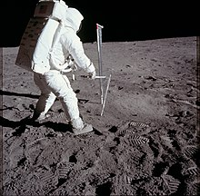
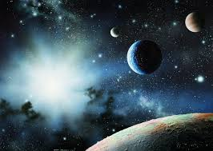
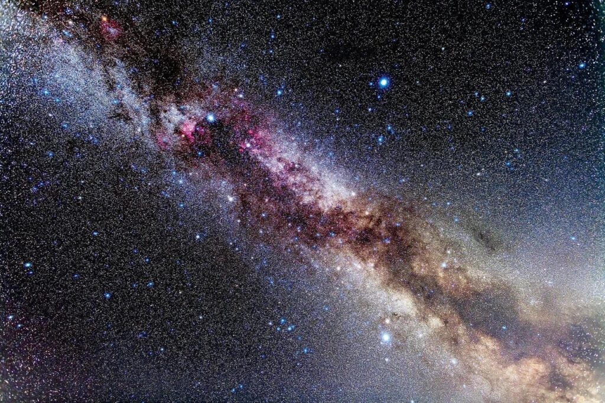
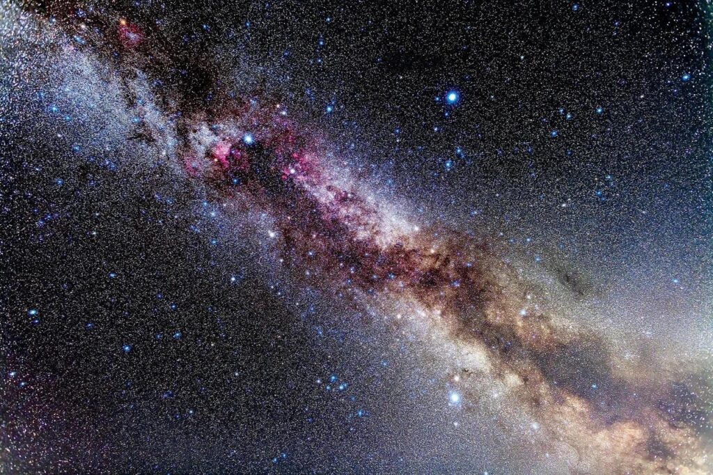

The Future of Space Exploration
General Space Exploration
For broader coverage of this topic, see
Exploration.

Space exploration is the use of astronomy and space technology to explore outer
space[1]
While the exploration of space is currently carried out mainly by astronomers with telescopes, its
physical exploration is conducted both by uncrewed robotic space probes and human spaceflight.
Space exploration, like its classical form astronomy, is one of the main sources for space science.
While the observation of objects in space, known as astronomy, predates reliable recorded history, it was
the development of large and relatively efficient rockets during the mid-twentieth century that allowed
physical space exploration to become a reality. Common rationales for exploring space include
advancing scientific research, national prestige, uniting different nations, ensuring the future survival of
humanity, and developing military and strategic advantages against other countries
[2]
The early era of space exploration was driven by a "Space Race" between the Soviet Union and the United States. A
driving force of the start of space exploration was during the Cold War. After the ability to create nuclear
weapons, the narrative of defense/offense left land and the power to control the air the focus. Both the Soviet
Union and the U.S. were racing to prove their superiority in technology through exploring space. In fact, the reason
NASA was created was as a response to Sputnik I.[3]
The launch of the first human-made object to orbit Earth,
The Final Frontier: Exploring the Vastness of Space
Beyond Earth: Humanity’s Journey to the Stars
"Beyond Earth: Elon Musk and the Vision to Save Humanity" is a compelling exploration of one of the most
visionary figures of our time and his quest to secure humanity's future among the stars. With unprecedented
access to interviews, speeches, and SpaceX documentation, this book delves deep into Elon Musk's ambitious
endeavors to reduce space transportation costs, colonize Mars, and ensure the long-term survival of humanity.
From the early days of SpaceX to the development of revolutionary technologies like the Falcon rockets and the
Starship, readers are taken on a journey through the trials, setbacks, and triumphs that have marked this
audacious quest. The narrative extends beyond the technical achievements to explore the philosophical and
existential implications of becoming a multi-planetary species, reflecting on what this monumental shift means
for our identity and legacy as human beings.
Unraveling the Mysteries of the Cosmos
"Unraveling the Mysteries of the Cosmos" is a grand topic! The cosmos, with its vastness and
complexities,
has intrigued humanity for millennia. From the first glimpses through telescopes to today's cutting-edge
technology like the James Webb Space Telescope, we've come a long way in our understanding of the universe.
Some of the key questions and mysteries we still strive to answer include:
The Origin of the Universe: What sparked the Big Bang? Is there a multiverse, and if so, what does
that mean
for the nature of reality itself?
Dark Matter and Dark Energy: These constitute about 95% of the universe's mass-energy content, yet we
can't
directly observe them. What are they made of, and how do they affect the universe's expansion?
Black Holes: How do they work, and what exactly happens at their core? Recent advancements,
like the Event
Horizon Telescope capturing the first image of a black hole's event horizon, are opening new avenues of
research.
The Nature of Time: What is time, and why does it flow in one direction? Is time travel
theoretically
possible, or is it merely a science fiction concept?
The Fate of the Universe: Will it continue expanding forever, slow down, and collapse, or even tear apart?
How can we predict the ultimate fate of everything?

* Specific Space Topics
1 .Space, The Final Frontier
eclipse, history,
space March 25,
2024 Library Resources,
Matt Dilworth mdilwort
 Looking up at the vastness and seeming timelessness of space, people have always sought to understand what
lies beyond the Earth. Ancient people struggled to explain phenomena like moon phases, shooting stars, comets, blood
moons, meteors, and even eclipses. It was a source of interest, though – ancient megalithic structures
and cave paintings are thought to show astronomical awareness.>

Looking up at the vastness and seeming timelessness of space, people have always sought to understand what
lies beyond the Earth. Ancient people struggled to explain phenomena like moon phases, shooting stars, comets, blood
moons, meteors, and even eclipses. It was a source of interest, though – ancient megalithic structures
and cave paintings are thought to show astronomical awareness.>
